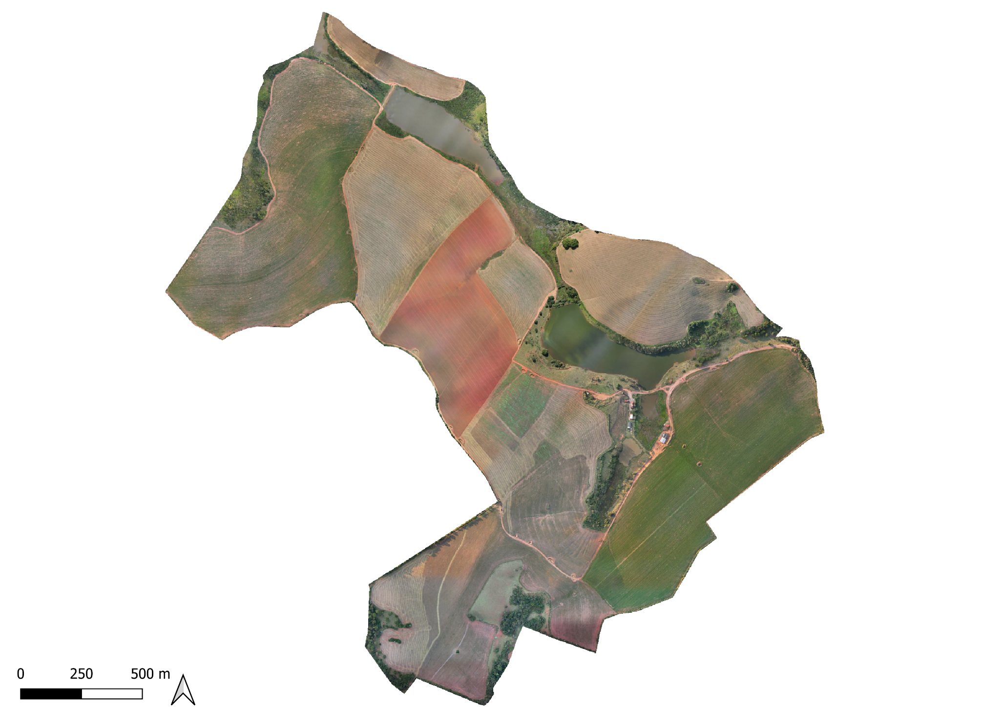
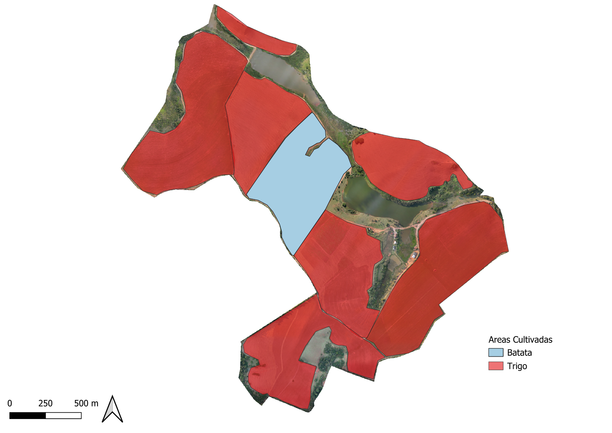
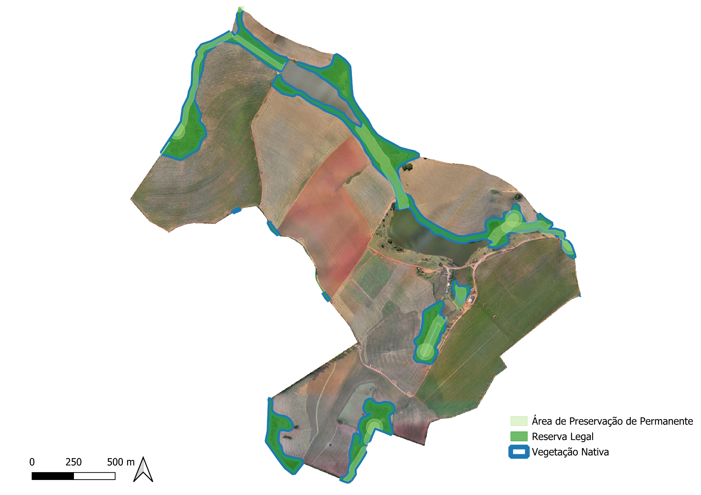
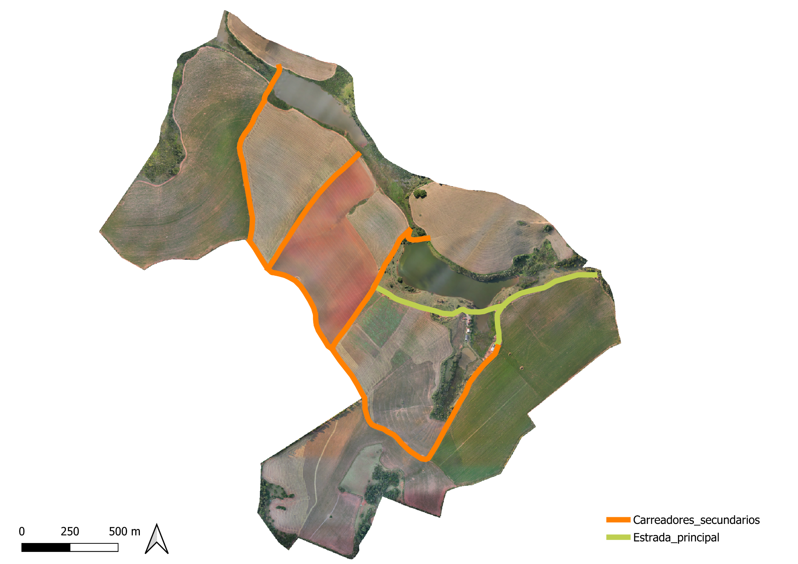

Ortomosaico obtido a partir do levantamento aéreo da propriedade, permitindo a visualização detalhada da ocupação e das características espaciais da área levantada.

Mapa da área destinada à exploração agrícola, permitindo visualizar a distribuição das áreas cultivadas dentro dos limites da propriedade.

Mapa destinado à representação das áreas de vegetação nativa, Áreas de Preservação Permanente (APP), Reserva Legal e demais elementos ambientais identificados no levantamento.

Mapa das principais estradas e acessos internos da Fazenda São Benedito, auxiliando na avaliação da logística e da circulação dentro da propriedade.
